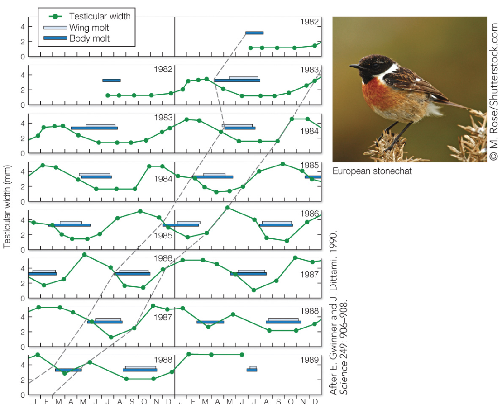

Endogenous Rhythms
Contents
Endogenous Rhythms¶
Why?
For many animals, behavioral priorities change regularly and cyclically over time.
Actograms¶
{kind=link}
Fig. 66 Activity throughout each day is plotted as the height of individual bars across time. Lighting conditions throughout each day are shown above the plots: L = light; D = dark. Each row is a different day (with the day before re-plotted on the same row). A) Entrained (synchronized) B) Free-Run C) Arhythmic.¶
⏳ 5 min
Use context from your reading and the information in the legend to help interpret Fig 66.
Q1: Compare A to B. What is the experimental manipulation? Why do the results of this experiment provide evidence that animals must have an internal time-keeping mechanism (“clock”)? What other variables might need to be controlled in this experiment to increase the evidence for this conclusion?
Q2: Think about the difference between an animal’s activity budget as a function of the time of day. Based on the paper you read for class, estimate the activity budget among stridulation and locomotion during the day versus during the night.
{kind=link}
Figure 2 from “Lifelong exposure to artificial light at night impacts stridulation and locomotion activity patterns in the cricket Gryllus bimaculatus”.
⏸️ PAUSE here for class-wide discussion
The “CLOCK”¶
What keeps track of time?
Here is an outline of an experiment that addressed that question.
{kind=link}
Fig. 67 Left: The cricket nervous system is shown in yellow overlaid on a dorsal view of the body. The brain ganglia are located in the head. Neurons in the retina (where light sensors are located) project to the optic lobe, which then projects to the central ganglia. Right: Actograms of normal stridulation behavior for crickets with an intact nervous system, a nervous system where the retinal projections were severed (A, red), and a nervous system where the optic lobe projections were severed (B, blue).¶
⏳ 5 min
Q3: What experimental comparisons and data (from Figure 67) provide evidence that there must be a biological mechanism that entrains the circadian clock?
Q4: Where in the cricket brain is the circadian clock located? What is your evidence for this (based on the experiment shown in Figure 67)?
⏸️ PAUSE here for class-wide discussion
The circadian clock is rooted in a molecular/genetic mechanism. A gene expression negative feedback loop combined with protein degredation enables a central pacemaker to keep a temporal rhythm.

Fig. 68 Animation of the transcription-translation feedback loop by Sarrah Hussein. If the animation does not start, click on the image to enlarge and initiate it, then “refresh” the navigation bar to repeat the animation as needed.¶
{kind=link}
In vertebrates specifically, the “master” circadian clock is located in the suprachiasmatic nucleus (SCN) of the hypothalamus. The spiking activity of SCN neurons is directly modulated by the transcription-translation feeback loop (TTFL) ticking away in its nucleus. In SCN neurons, electrical activity and the molecular oscillation of the TTFL are tightly interlinked such that spiking and calcium activity is decreased during the night.
{kind=link}
Fig. 70 Graphical Abstract from Harvey et al (2020) Ion Channels Controlling Circadian Rhythms in Suprachiasmatic Nucleus Excitability1¶
Entrainment¶
Internal clocks alone are generally not sufficient to synchronize behavior among a population. Variability both within and across individuals de-synchronizes the cyclic pattern of behavior across individuals.
{kind=link}
Fig. 71 A) Under constant light conditions, the period of circadian stridulation is variable across the group. B) Under constant light conditions, the phase of peak activity (stridulation, top; locomotion, bottom) is variable within an individual.¶
Circadian Rhythms, Case Study: Melatonin and Mating Behavior¶
Circadian clocks generally act on behavior via hormonal modulation of neural circuits.
Male midshipman fish generate a vocalization called a “hum” to attract females. The hum by rapidly contracting their drumming muscle on their swim bladder. Each hum can last for a long duration (hours). Mating behavior in these fish is nocturnal.
The research group of Andy Bass at Cornell University investigated the mechanism of circadian humming behavior in midshipman fish2. To do so, they manipulated both light and hormone levels. You will examine the results of their experiments in the next two section to learn more about the mechanism of circadian behavior.
⏳ 5 min
This research group first investigated circadian rhythm of humming.
{kind=link}
Fig. 72 The first experimental paradigm Feng et al2 utilized alternating bouts of LD and DD circadian cycles. In the actogram, white background denotes light and gray denotes darkness. The humming activity is marked in black throughout each day.¶
Q5: Do midshipman fish have an endogenous clock for humming behavior? What is the evidence?
Q6: What activity pattern would you predict in constant light conditions?
⏸️ PAUSE here for class-wide discussion3
The research group then investivated the role of melatonin in distributing the activity budget for humming behavior2.
In vertebrates, melatonin (a hormone) is primarily produced by the pineal gland at night (under the control of SCN spiking activity)4. Therefore, this clock-hormone pathway translates the external light-dark cycle into an internal hormonal message. Light inhibits melatonin production (in part by increasing the spiking activity of SCN neurons). Constant light is therefore an effective, non-invasive method for decreasing melatonin synthesis.
⏳ 10 min
{kind=link}
Fig. 73 A) The second experimental paradigm of Feng et al2 utilized a transition from LD conditions to LL conditions. At the LD to LL transition, groups of fish were either treated with exogenous melatonin (2-iMel; experimental gorup), or treated with placebo (control group). The exogenous melatonin in the experimental group was administered using an “implant” (meaning melatonin is slowly and constantly released into the blood). B) Effects on total daily hum duration. C) Effects on hum activity.¶
Q7: Does the hormone melatonin have an excitatory or inhibitory effect on humming behavior? What is the evidence?
Q8: Under DD conditions, the fish exhibited free-run hum activity (Figure 72, see margin). However, under LL conditions, the fish now exhibited what kind of activity pattern?
Q9: Can you think of any reasons why an endogenous circadian pattern of humming was not recovered in the experimental group (Figure 73C)?
⏸️ PAUSE here for class-wide discussion
Interestingly, melatonin seems to be acting at two different parts of the singing circuits in the brain of midshipman fish:
permitting humming behavior (ie. bringing command neurons for the behavior closer to spike threshold)
lengthening the period of central pattern generator circuit activity for individual hums.
Consistent with these different scales of effect (motivation for the behavior and the pattern of the behavioral action itself), melatonin receptors are found in BOTH neuroendocrine regions of the brain and vocal-acoustic regions. For example: there were melatonin receptors in the preoptic area-anterior hypothalamus (POA-AH), which is known to control vertebrate social and reproductive behaviors; and there are melatonin receptors in the hindbrain central pattern generator that directly controls the coordination and timing of vocal muscule contractions.
The following Graphical Abstract shows a summary of all of their results.
{kind=link}
Fig. 74 Graphical Abstract for Feng and Bass (2016) ‘Singing’ Fish Rely on Circadian Rhythm and Melatonin for the Timing of Nocturnal CourtshipVocalization. Current Biology 26(19).¶
Additionally, in species that are active during the day (like songbirds), melatonin inhibits overall levels of vocalization behavior yet remarkably still lengthens the duration of individual songs.
{kind=link}
Circannual Rhythms¶
Many animals exhibit regular repeated fluctuations in behavior across the year. Reproduction, mating, migration, hibernation, and foraging behavior are just a few examples.
Changing priorities throughout the year¶
{kind=link}
Endogenous rhythms and entrainment¶
In the following two examples, the animals were held under constant light (12L:12D) and temperature conditions in the lab for multiple years.
{kind=link}
{kind=link}
Based on this experimental data, which species (squirrels or stonechats) would you infer lived in an environment with more predictably timed changes in the weather?
Circadian sensitivity to light¶
A common mechanism for timing yearly cycles of behavior relies on photoperiodism: the ability to detect the photoperiod (day length). This is accomplished by a mechanism with a circadian cycle of sensitivity to light. This mechanism would be insensitive to light from dawn until wintertime dusk. Sensitivity would increase between the winter and summer dusk times. In this way, the mechanism would only be activated during the summer (when light exists during the sensitive circadian period).
Photoperiodism (circadian cycles of sensitivity to light) can provide a mechanism for timing circannual behaviors such as reproduction.
{kind=link}
Unpredictable cues¶
In some cases, unpredictable cues (such as rain fall) may be more informative than predictable ones (such as annual changes in day length) for reproductive timing

However, the ability to respond to these external cues often depends on a circannual rhythm of overall “readiness”.
Additional Resources¶
- 1(1,2)
In most CNS neurons, synaptic activity providing inhibitory or excitatory input to brings the membrane potential closer to, or further from, threshold to initiate firing. However, in SCN neurons which fire spontaneously via intrinsic mechanisms, neuromodulation contributes to the pattern, synchronization, and plasticity of firing. Glutamate is the major neuromodulator for photic entrainment, while GABA, substance P, histamine, serotonin, neuropeptide Y, melatonin, and orexin contribute to non-photic input that entrains SCN activity to other environmental factors and/or internal states. Some neuromodulation of SCN excitability is direct, via ionotropic receptors that mediate synaptic activity. Studies are not yet in good agreement on whether there is a circadian rhythm in synaptic activity, either via excitatory (glutamatergic) or inhibitory (GABAergic) synaptic channels (186, 202). Additional neuromodulation of SCN excitability occurs indirectly via metabotropic receptors that activate intracellular signaling pathways. Thus a panoply of neuromodulators ultimately enact their effects on SCN neuronal activity through the ion channels that directly regulate membrane excitability. (from Harvey et al (2020) Ion Channels Controlling Circadian Rhythms in Suprachiasmatic Nucleus Excitability1)
- 2(1,2,3,4,5)
- 3
In humans, light can reset the clock because it stimulates the production of PER protein. However, under constant light conditions, what is the response to being “constantly stimulated”? Here is one example in which the circadian pattern of wheel running activity was studied under both constant light and constant dark. Image from LeGates TA, Altimus CM. Measuring circadian and acute light responses in mice using wheel running activity. J Vis Exp. 2011 Feb 4;(48)
- 4
Interestingly, melatonin also effects SCN activity. SCN neurons have melatonin receptors and melatonin binding reduces the neurons’ spiking activity.